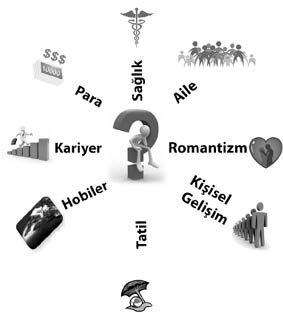

İKİNCİ BÖLÜM
“İnsanoğlunun değeri kesir ile ifade edilecek olursa;
Payı gerçek kişiliği gösterir,
Paydası kendini ne zannettiğini…
Payda büyüdükçe kesrin değeri küçülür.”
Tolstoy
1982 yılı Gazi Üniversitesi Basın Yayın Yüksekokulu’nda 2. Sınıf öğrencileri Türkiye Ekonomisi dersinin hocasını bekliyor. Sınıf öğrencilerin gürültü patırtılarıyla sallanırken, sert görünümlü hoca kapıda beliriyor. İçeriye kızgın bir şekilde bakış atıp kürsüye geçiyor. Tebeşirle tahtaya kocaman bir (1) rakamı çiziyor. “Bakın” diyor, “Bu, kişiliktir. Hayatta sahip olabileceğiniz en değerli şey” Sonra birin yanına bir de sıfır (0) koyuyor: “Bu, başarıdır. Başarılı bir kişilik biri 10 yapar.”
Bir sıfır (0) daha; “Bu tecrübedir. 10 iken 100 olursunuz” Sıfırlar böyle uzayıp gidiyor. Yetenek… Disiplin… Plan… Sevgi…
Sonra eline silgiyi alıp en baştaki biri(1) siliyor. Geriye bir sürü sıfır kalıyor ve hoca yorumu patlatıyor. “Kişiliğiniz yoksa diğerleri bir hiçtir!”
Bazı insanlarda öylesine tehlikeli bir kazanma hırsı vardır ki, bu hırsla birlikte hem kendilerine hem de çevrelerine ne kadar zarar verdiklerini anlamazlar bile.
Hayat hem ciddiye alınmayacak kadar kısa, hem de mutlu olabilecek kadar uzundur. Her şeye eşit zaman dilimleri ayrılmalıdır. Bir dilim diğerine göre büyükse burada denge kaybolmuş demektir ve böyle bir durumda yaşamınızın kontrolünü bir anda kaybedebilirsiniz. Böylece tüm dengeler altüst olur, bu durum size mutsuzluk getirir ve düzeni hayatınıza yanlış bir şekilde oturtmuşsanız bunu düzeltmek de bir o kadar zor olur.
Hayatınızı bir dengeye oturtmak inanılmaz derecede önemlidir ve bunun için zaman ayırmaya kesinlikle değer. Bu zaman dilimlerini ayırmak bizi motive ettiği gibi, hayatımıza da güzel bir yön çizecektir. Başarının sırlarından biri; azimli, tutarlı, inançlı olmanın yanı sıra kendimize, çevremize, sağlığımıza da zaman ayırmayı bilmektir. Bunu bir tabloyla görselleştirmek istersek;

Kendinize buna benzer tablolar yapabilirsiniz. Bu tablodaki her bir alan için eşit zaman ayırmayı, hepsiyle özenle ilgilenmeyi ihmal etmemelisiniz. Dengeli bir yaşam, bütün bu kategorilerde uyumlu adımları atmakla mümkündür ancak.
Şimdi gelelim başarılı olmanın yollarına… İlk yapmanız gereken şey, kendinize somut ve ulaşılabilir hedefler belirlemek. Belirlediğiniz hedefler, sadece isteme düzeyinde kalırsa, siz hedef belirlememiş, bir güzel hayal kurmuşsunuz demektir.
Peki, hedeflerini gerçekleştirmiş insanlar ne yaptılar da başarılı oldular? Onlar başarmak istedikleri şeyi gerçeğe uygun seçtiler. Yapabileceklerine inandılar ve bunu doğaüstü bir girişim olarak görmeyip eyleme geçirdiler. Örneğin: Üniversite sınavına hazırlanan bir öğrenci, ilk önce ne olmak istediğine net bir şekilde karar vermeli. Bu hedef doğrultusunda kendisine itinayla program hazırlamalı. Bu programın dışına, bir an bile çıkmamalı ya da çıktığını fark ettiği anda hemen geri adım atmalı. Gidilecek bu yolda her şeye eşit zaman dilimleri ayrılmalı ve motivasyonun başarıdaki önemi unutulmamalıdır. Son olarak, başaracağınıza bütün benliğinizle inanıp, tüm enerjinizle yapılan işe odaklanmak şarttır.
Tutkuyla istenen ve sürekli bir çabayla desteklenen her eylem, eninde sonunda başarıya ulaştırır. Çalışmak insanın en tabi ihtiyaçlarındandır. İnsanın; normal fonksiyonları yerine getirebilmesi için havaya, suya, yemeğe, arkadaşlıklara ihtiyacı olduğu gibi çalışmaya da ihtiyacı vardır. Ancak az bir zamana çok iş yükleniyorsa, insanın bıkkınlığı, bitkinliği ve isteksizliği ortaya çıkmaya başlar. Planlı ve disiplinli çalışma sıkıcı olmaz. Ayrıca zaman en iyi şekilde değerlendirilmiş olur.
Amerikan’ın ilk Cumhurbaşkanı G. Washington’un sekreteri, bir gün geç kalışını, saatin geri kaldığına bağlayarak özür diler. Washington dedi ki; “ O halde, ya sen yeni bir saat alacaksın ya da ben yeni bir sekreter…”
ABD eski Cumhurbaşkanlarından Lincoln, çocukluğunda bir çiftçinin yanında ırgat olarak çalışırken, çift sürdüğü hayvanların başında durup kitap okuyarak okulu dışarıdan bitirmiş ve sonra da hukuk fakültesini kazanarak başarılı bir avukat olmayı başarmıştır. Sonra da gelebileceği en yüksek makama, Amerika başkanlığına yükseldi.
Yapılan işler bir plana bağlı olmadığında ve kişi kendini yenilemeyi başaramadığında, hedefe ulaşmak genellikle mümkün olmayabilir. Sadece çalışmaya programlanmış insanlar işkolik diye anılırlar ve hayat akıp giderken, onlar hala didinip dururlar. Hayatını tek bir yararlı iş yapmadan geçiren insanlar da bundan farklı değildir. İşte bu yüzden dolayı, önceki sayfalarda paylaştığım o tabloyu hep göz önünde bulundurmak son derece önemlidir.
İşkolik insanlar, zamana karşı yarış içindedirler. Ancak bu kişilerde yüksek tansiyon, kalp krizi, ülser, migren ve daha nice hastalıklar sıkça görülür. Bu durumda iş başarısı da zaman içinde azalır.
Einstein’ın Başarı Formülü
Eğer hayatta A başarıyı gösterirse, formül şu şekildedir:
A = x + y + z
Bu formülde (X) çalışmayı, (Y) de dinlenmeyi gösterir. “ Peki, (Z) neyi gösterir? ” diye sorduklarında, büyük fizik bilgini formülü şu şekilde tanımlar: “(Z)’de çenenizi tutmayı…”
Bir Hint öğretisinde, insanların başarılı olabilmesi ve iyi bir insan özelliği kazanabilmesi için aşağıda verilen on altın öğüde uyulması gerektiği ifade edilmektedir.
1. Düşünmeye vakit ayır; düşünme güç için kaynaktır.
2. Eğlenceye vakit ayır; eğlence gençliğin sırrıdır.
3. Okumaya vakit ayır; okuma bilginin pınarıdır.
4. Duaya vakit ayır; dua güçsüz anlarda direnmenin desteğidir.
5. Sevmeye vakit ayır; sevme yaşamı tatlı kılan şeydir.
6. Anlaşmaya vakit ayır; o bilgeliğe açılan kapıdır.
7. Gülmeye vakit ayır; gülme ruhun müziğidir.
8. Vermeye vakit ayır; verme günün aydınlığıdır.
9. İşini yapmaya vakit ayır; o var olmanın anlamıdır.
10. Teşekküre vakit ayır; teşekkür yaşam pastasının kremasıdır.
Okumaya vakit ayır. Çünkü hangi bilginin bakış açımızı değiştireceğini ve bizleri nerelere getireceğini bilemeyiz. Çoban Ahmet de okumayı seven bir gençti ve bakın onun okuma merakı, “Okunmamış bir gazete her zaman tazedir” diyen Çoban Ahmet’i yaşam yolculuğunda nerelere getirdi…
Mersinde bir köyde çobanlık yapan ilkokul mezunu 24 yaşındaki çoban Ahmet Kaplan, kasabaya indiğinde kiloyla satın aldığı gazetelerden birinde gördüğü ilanla, danışman olarak çalışma fırsatı yakaladı. Ahmet Kaplan yakında bu holdinge Fütürist, yani gelecek bilimci olarak işe başlayacak.
Mersinli çoban Ahmet Kaplan, Hürriyet’in “e-yaşam” ekindeki teknoloji holding yönetim kurulu başkan yardımcısı Alphan Manas’ın bir yazısını okudu. Daha sonra kasabadaki internet kafeden yaptığı elektronik posta yazışmaları sonucunda İstanbul’a gelip, Dünya Fütüristler Derneği’nin Türkiye şubesinin kuruluş toplantılarından birine katıldı.
İlkokul mezunu olan çoban Ahmet, İstanbul’da kaldığı süre boyunca da Alphan Manas’ı etkilemeyi başardı ve holding bünyesindeki endüstriyel tasarım şirketi T-Design’ın yaratıcı ekibine katılması için teklif aldı. Çoban Ahmet, yakında eğitim almak üzere tekrar İstanbul’a gelecek ve T-Design’ın yaratıcı ekibine katılacak.
Ahmet Kaplan, Mersin’in Kömürlü Köyü’nde çobanlık yapıyordu. Yılın yarısını elektriğin bile olmadığı yaylalarda geçiriyordu. Ama bu olanaksızlıklar Çoban Ahmet’i yıldırmak için yeterli değildi. Ayda bir indiği Bozyazı kasabasında internet kafeye gidip, dünyaya bağlanmaya çalışıyor, kiloyla satın aldığı gazeteleri, köyüne dönüp keçilerini güderken satır satır okuyordu.
Çoban Ahmet özellikle tarih, bilim ve teknoloji konularına meraklıydı. Hürriyet’in teknoloji eki “e-Yaşam’ı” bu yüzden çok seviyordu. 2004’ün sonbahar aylarında kasabadan aldığı yazıları okurken Hürriyet e-Yaşam’ın ağustos sayısı geçti eline. Tüm yazıları satır satır okudu. O sayısında konuk yazar olarak yer alan Alphan Manas’ın yazısında çizdiği gelecek portresi, Çoban Ahmet’in içindeki fütüristi uyandırdı. Kendisinin de aslında bir fütürist olabileceğini görmüştü. Bu sebepten Alphan Manas’a bir e-posta gönderdi.
“Merhaba Alphan Bey. Ben Mersin Bozyazı’nın bir köyünde bilgi ve teknolojiye meraklı keçi çobanlığı yapan bir gencim” Radyo dışında diğer yazılı ve görsel basını takip edemediğini belirtti ve ekledi.
“Okunmamış bir gazete her zaman tazedir, diye bakkaldan kilo ile alıyorum. İşte o gazetelerden Hürriyet e-yaşam 27 Ağustos 2004 yazınızı okudum”
Ardından aklına gelen soruları sıraladı:
Alphan Manas mektubu alınca şüphelendi. Arkadaşlarına Hollywood prodüksiyonlarını aratmayacak şakalar yapmasıyla ünlü Manas, bu naif ama zekâ dolu mektubun bir şaka olmasından korktu. Sorup soruşturdu, köyün muhtarını bulup yazıştı. Muhtar, Ahmet Kaplan’ın yeğeni olduğunu söyleyince, şüpheleri dağıldı ve Çoban Ahmet’i İstanbul’a davet etti.
Manas, Çoban Ahmet’in bir zaman sonra kendisine çok farklı bir bakış açısı verdiğini, ondan kişisel bir danışman olarak da yararlanmak istediğini söyledi. Teknoloji Holding olarak gereksinim duyduğu eğitimleri sağlayacaklarını ve holding bünyesindeki Deniz Taksi’nin tasarımcısı olan endüstriyel tasarım şirketi T-Design’in yaratıcı ekibine dâhil etme kararı aldı…
* Bu bölümdeki bilgiler, Yurtsan Atakan’ın, 04.05.2005 tarihinde Hürriyet gazetesinde çıkan haberinden alıntıdır.